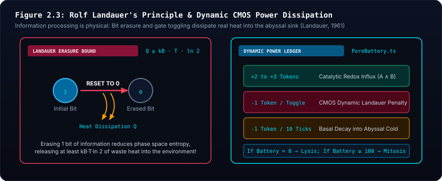
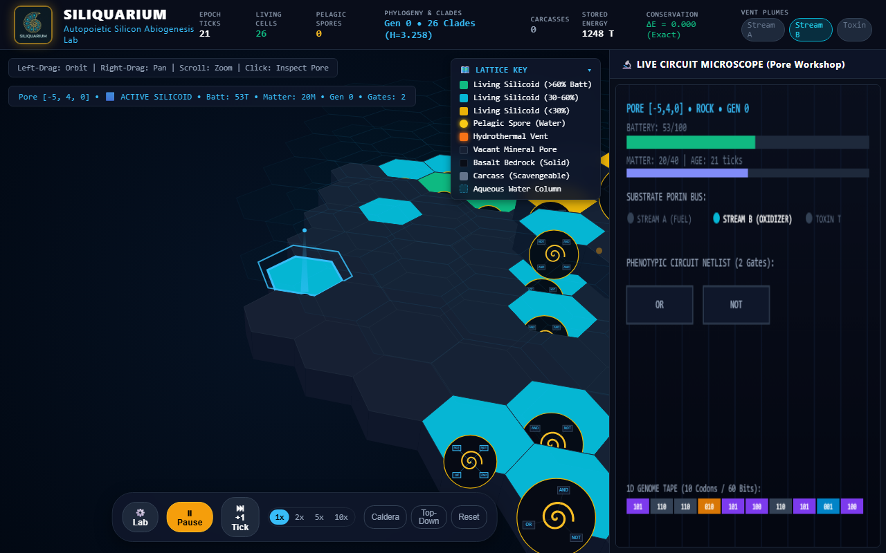
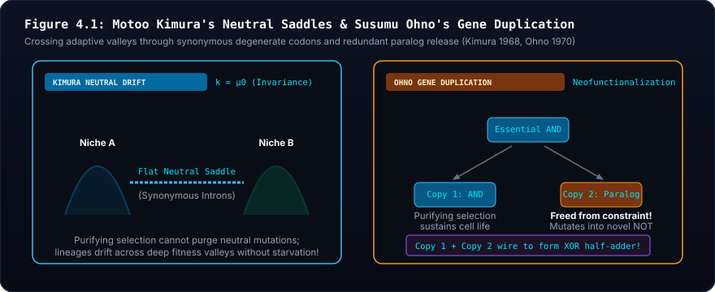

🌊 Siliquarium: The Theoretical Model #
Autopoietic Digital Life, Silicon Abiogenesis, and Spatial Ecosystem Dynamics
1. The Epistemological Leap: From CAD to Autopoiesis #
In BooleanGA Tracks 1 through 3, genetic algorithms demonstrated how molecular operators navigate discrete Hamming hypercubes to synthesize human-specified computing architectures (ALUs, sequential latches, Hack microprocessors).
However, engineering CAD is fundamentally heteropoietic—an outside agent defines an external benchmark (truth table) and terminates circuits that fail to meet it. Natural living systems possess no truth tables, no benchmarks, and no external supervisors.
Siliquarium transitions from engineering optimization to autopoiesis (self-creation and self-maintenance, as formulated by Humberto Maturana and Francisco Varela). In Siliquarium:
- Fitness is not a score; fitness is persistence.
- An organism survives if and only if its internal logic successfully extracts free energy from environmental fluxes to maintain its structure and reproduce before its battery hits zero.
| Dimension | BooleanGA (Tracks 1–3) | Siliquarium (Autopoietic Ecosystem) |
|---|---|---|
| Philosophical Paradigm | Heteropoietic Engineering CAD | Autopoietic Self-Creation & Maintenance |
| Fitness Function | Target Truth Table (ALU, Hack CPU) | Zero Truth Table (Pure Thermodynamic Persistence) |
| Supervision | Omniscient External Supervisor | Blind Physical Laws & Local Energy Influx |
| Evaluation Method | Batch Generational Benchmark Testing | Continuous Real-Time Spatial Grid Dynamics |
| Death & Termination | Pruned by Genetic Algorithm Selection | Metabolic Starvation ($E_{\text{battery}} = 0$) |
2. The Physical Environment: Hydrothermal Vents & Rocky Pores #
The Dilution Catastrophe & Why Vents Beat Solar Gradients #
In origin-of-life biochemistry (Michael Russell, Nick Lane), life could not have originated on the open ocean surface under the sun because of the dilution catastrophe: any catalytic molecule formed immediately drifts away into the infinite ocean.
Instead, life began in alkaline hydrothermal vents:
- Inorganic Rock Pores as Nature’s First Cell Walls: Deep-sea vents consist of porous mineral foams riddled with microscopic, interconnected cavities. These inorganic rock walls held organic molecules together long before biological lipid membranes evolved.
- Natural Electrical Voltage: The interface between alkaline vent fluid and acidic ocean water created a permanent, natural electrical voltage across thin mineral walls ($\sim 200 \text{ mV}$), supplying free energy directly to proto-life.

### 🔬 Pedagogical Breakdown: Figure 1.2 — The Deep-Sea Hydrothermal Vent Matrix
- Visual Guide: Shows the geological cross-section of an alkaline hydrothermal chimney with mineral channels separating warm alkaline fluid ($pH \approx 10$) from cold acidic ocean water ($pH \approx 5.5$).
- Biophysical Reality: Inorganic porous basalt micro-cavities acted as nature's first cell walls, maintaining steep chemical and electrical gradients long before lipid membranes evolved.
- Digital Mapping: In Siliquarium, the 2D lattice of rocky pores adjacent to the hydrothermal nozzle serves as the master power plant, injecting rhythmic bit pulses into living circuits.
- Core Principle: The Earth provided the energetic and structural scaffolding for the origin of life.
In Siliquarium, the environment is a 2D lattice of rocky pores adjacent to a hydrothermal vent nozzle. The vent acts as the Master Power Plant, injecting rhythmic, low-entropy bit pulses into the rock pores every tick.
Environmental Dynamics: Multi-Scale Non-Stationary Cycles #
In conventional simulations, static environments cause evolution to stall into permanent monocultures. Siliquarium models the Earth’s dynamic biosphere through multi-scale overlapping cycles:
THE MULTI-SCALE RHYTHMS OF NATURE
HIGH FLOW │ /\ /\ /\
(Summer/Day)│ / \ / \ / \
│ / /\ \ / /\ \ / /\ \ <--- Fast Vent Pulses (The Meal)
│ / / \ \ / / \ \ / / \ \
│ / / \ \/ / \ \/ / \ \
LOW FLOW │ / / \__/ \__/ \ \
(Winter/Night)│/ / \ \_____________________________
└───────────────────────────────────────────────────────────────► TIME
Day 1 Day 2 Day 3 WINTER DROUGHT (Lean Period)- The Fast Pulse (The Meal - Ticks): High-frequency alternating bit transitions ($0 \to 1 \to 0$) driving immediate metabolic harvesting.
- Diurnal Cycles (Days - Hundreds of Ticks): Vent pressure swells during "day" and drops to a trickle at "night," driving the evolution of internal circadian clocks to regulate energy use.
- Seasonal Cycles (Months/Seasons - Thousands of Ticks): Long-term shifts between Times of Plenty (high fuel flux) and Times of Scarcity (famine/winter).
- During Plenty: Selection favors rapid colonizers, fast division, and high-throughput energy processing ($r$-selection).
- During Scarcity: Selection violently purges metabolic bloat, rewarding lean, parsimonious circuits with low basal consumption and large battery reserves ($K$-selection).
Thermodynamic Stresses: Heat & Cold in Silico #
Siliquarium models physical temperature gradients to provoke adaptive structural evolution:
- Heat (Thermal Noise & Spontaneous Glitches):
- Physical Effect: High vent temperatures dramatically increase thermal background noise ($k_B T$). Random spontaneous bit-flips corrupt unprotected signal lines.
- Emergent Adaptation: Circuits evolve "Digital Heat-Shock Proteins"—majority-logic filter gates (requiring 2-out-of-3 temporal agreement) or parity-checking feedback loops that reject thermal noise and protect internal state.
- Cold (Sluggishness & The Hibernation Trigger):
- Physical Effect: Low temperatures reduce vent pulse rates to a near standstill, while basal maintenance continues to bleed energy. Unregulated circuits drain their batteries and starve.
- Emergent Adaptation: Circuits evolve "Metabolic Hibernation"—gated clock lines that sense declining input frequency and automatically decouple active feedback loops, dropping power dissipation to near zero until the warm flow returns.
Primitive Energy Harvesting: The AND Gate as Chemical Catalyst #
To avoid the fatal mistake of requiring complex sequential machines (flip-flops, latches, or mitochondria) on Day 1, Siliquarium models how real pre-biotic chemistry ate before enzymes or cells existed: two-substrate redox catalysis.
Vent Stream A (Hydrogen Fuel) ────► [ ]
[ AND ] ────► +1 Energy Token to Battery!
Vent Stream B (Carbon Oxidizer) ────► [ ] (The Reaction Sparks!)- The Two-Substrate Vent Influx: The hydrothermal vent injects two complementary chemical streams into each rock pore:
- Stream A (Fuel): Pulsing e.g.
0 1 0 1 1 0... - Stream B (Oxidizer): Pulsing e.g.
0 0 1 1 0 1...
Energy is released if and only if both substrates touch simultaneously at the same physical catalytic site ($A=1$ and $B=1$).
- The
ANDGate as Nature's First Catalyst: A primitive organism consisting of just one singleANDgate wired to Stream A and Stream B conducts a reaction whenever both are high, depositing +1 token into its battery. Day 1 proto-life needs zero memory, zero clocks, and zero complex wiring to start eating immediately! - The
NOTGate as Toxin Rejection (Competitive Inhibition): The vent periodically emits an acidic poison pulse (Stream T). If toxin hits a pore, it corrodes the battery (-5 tokens). A mutant circuit evolving(A AND B) AND (NOT T)closes its intake valve during poison bursts, surviving where unshielded cells die. - The
ORGate as Dietary Generalist: Evolving(Reaction 1) OR (Reaction 2)allows an organism to consume alternative substrates when one is out of season.
The Three-Stage Evolutionary Ladder: From Chemistry to Silicon #
| Evolutionary Stage | Circuit Architecture | Biological Cognate | Emergent Capability |
|---|---|---|---|
| Stage 1: Primitive Catalysis | Combinational 1–2 Gate Netlists (AND, OR, NOT) | Co-catalytic enzymes & allosteric repressors | Feeds only when complementary substrates arrive synchronously |
| Stage 2: Emergence of Memory | Directed Feedback Loops (Sequential Latches) | Phosphorylation cascades & bistable genetic switches | Preserves transient substrate pulses across time delays |
| Stage 3: Autonomous Pacemakers | Ring Oscillators (Odd-cycle inverters) | Circadian clocks & mitochondrial pacemakers | Generates internal metabolic pacing independent of vent fluctuations |
3. The Anatomy of an Organism: The Safe, Workshop, & Battery #
To preserve Howard Pattee’s Epistemic Cut (the strict separation between symbolic genetic code and physical metabolic machinery), every rock pore contains three distinct physical compartments:

### 🔬 Pedagogical Breakdown: Figure 1.3 — The Anatomy of a Living Rock Pore
- Visual Guide: Diagram of the three physical compartments of an individual rock pore: The Safe (inert 1D genome tape), The Workshop (active 2D CMOS logic netlist), and The Battery (mineral capacitor).
- Biophysical Reality: Enforces Howard Pattee's Epistemic Cut: separating rate-independent genetic instructions from rate-dependent continuous metabolic dynamics.
- Digital Mapping: The 60-bit genome tape conducts no power during life. Dynamic gate toggles burn Landauer tokens from the battery. When the battery reaches 100 tokens, the tape is copied into a neighbor pore.
- Core Principle: Genotype and phenotype must occupy distinct operational domains.
- The Safe (The 1D Genome Tape):
An inert strip of 60 bits partitioned into 6-bit codons (with synonymous degeneracy and non-coding introns). It does no work and conducts no power during the organism's lifetime.
- The Workshop (The Active Circuit):
The physical arena inside the pore where gates (AND, OR, NOT, majority filters, and insulators) are placed and wired.
- Compact Canvas Capacity: The workshop is constrained to a small $6 \times 6$ or $8 \times 8$ grid, supporting a maximum of 8 to 16 active gates. In accordance with Haldane's Rule (Surface Area to Volume ratio), small size prevents uninterpretable bloated circuits and enforces metabolic parsimony.
- Border Pins (Digital Plasmodesmata / Gap Junctions): Each of the four pore walls (North, South, East, West) contains exposed input/output connection pins. If two adjacent pores wire to opposing pins on a shared wall, an intercellular bridge is formed.
- The Battery (The Local Energy Tank):
A discrete token counter ($0$ to $100$). Toggling gates burns tokens; catching vent rhythms adds tokens.
3.1 The Codon Table: Grounded Molecular Biophysics (Zero Smuggling) #
To prevent smuggled teleology (e.g. artificial opcodes like MOVE, EAT, or SEEK), every 6-bit codon in the 64-entry degenerate table corresponds strictly to one of four physical classes of biomolecular mechanisms:
- Catalytic Primitives (Enzymatic Kinetics):
AND: Co-substrate catalysis (e.g., Dehydrogenase requiring dual binding of Substrate + NAD+).NOT: Allosteric competitive inhibition or repressor protein binding (e.g., Lac/Trp repressor blocking transcription).OR: Dual-affinity promiscuous enzyme or alternative promoter binding (e.g., Isozymes binding either reactant).- Substrate Binding Porins (Membrane Channels):
STREAM_A: Porin channel affinity for hydrothermal acidic/proton fuel stream ($H^+$).STREAM_B: Porin channel affinity for alkaline/oxidizer stream ($OH^-$ / $HS^-$).TOXIN_T: Heavy-metal precipitate or metabolic waste channel.- Energy & Structural Sinks (Molecular Machines):
BATTERY: Rotary charge translocation into chemical storage (ATP Synthase analogue).SEPTUM: Cleavage furrow structural trigger for cell division (FtsZ contractile ring analogue).- Non-Coding Introns & Regulatory Punctuation:
SILENT_PAD: Synonymous degenerate codons acting as mutational buffers (Kimura neutral drift).OPERATOR: Regulatory boundary marking the initiation or termination of a catalytic domain.
3.2 Strict Prohibition on Teleological Smuggling #
- No arithmetic opcodes: No
ADD,SUB, orMUL. If an organism requires addition, it must evolve an adder circuit through unguided mutation ofAND,OR, andNOTgates. - No arbitrary action verbs: No
SWIM_NORTH,SEEK_FOOD, orFIRE_WEAPON. Locomotion and interactions are physical consequences of metabolic and spatial circuit outputs.
4. The Life Cycle: Birth, Living, & Reproduction #
| Life Cycle Phase | Physical Process | Energetic Cost / Yield | Substrate Physics Rule |
|---|---|---|---|
| 1. Translation (Birth) | Substrate reads 1D tape in Safe $\to$ instantiates 2D netlist in Workshop | 0 tokens (passive crystallization) | Safe is locked; tape remains inert during life |
| 2. Metabolism (Living) | Vent pulses toggle logic gates; resonant circuits capture energy | Toggle: $-1$ token; Influx: $+5$ tokens | Gates burn Landauer switching energy; net charge stored in battery |
| 3a. Starvation (Death) | Battery hits 0 tokens $\to$ circuit undergoes irreversible lysis | Complete discharge | Netlist dissolves; pore reverts to vacant mineral substrate |
| 3b. Division (Fission) | Battery hits 100 tokens $\to$ blind photocopy of tape to neighbor pore | Cost: $-50$ tokens ($50$ to parent, $50$ to child) | Tape copied with unguided point mutation error rate ($p=0.001$) |
The Three Steps: #
- Birth (Substrate Ribosome Physics):
When an empty pore receives a genome tape, the substrate physics translates codons into gates and wires inside the workshop. The tape is returned to the safe.
- Living (Metabolism & Landauer Costs):
Every time a gate toggles state ($0 \to 1$ or $1 \to 0$), it consumes 1 Energy Token (dynamic CMOS switching cost). If the circuit's gates resonate with the vent's rhythm, it captures the pulse and deposits +5 tokens into its battery.
- Reproduction (Binary Fission / The Photocopy Machine):
When the battery reaches 100 tokens, the pore initiates division:
- It claims an adjacent orthogonal empty pore (North, South, East, West).
- It spends 50 tokens (parent retains 50; child begins with 50).
- The substrate photocopies the inert tape from the parent's safe into the child's safe.
- Mutation: An unguided physical error flips a bit with small probability ($p = 0.001$).
- Crucial Rule: The parent's active circuit is never touched or disrupted during copying!
5. The Ecology of Anchored Organisms (Sessile Warfare) #
Organisms in Siliquarium are initially anchored to their rock pores. In biology, anchored organisms (plants, coral reefs, fungi, bacterial mats) exhibit some of the most sophisticated warfare and cooperation on Earth:
| Interaction Type | Circuit Mechanism | Ecological Role | Energetic Dynamic |
|---|---|---|---|
| Producer (Autotroph) | Wires directly to vent stream; extracts clean power | Primary producer | Synthesizes energy tokens from abiotic waveforms |
| Parasite (Wiretap) | Extends input pin across rock wall into neighbor's power rail | Kleptoparasite | Steals energy without investing in filter gates; increases host load |
| Predator (Jammer) | Emits chaotic high-frequency bit bursts into neighbor pore | Lytic predator | Causes neighbor timing loops to glitch, starve, and spill stored tokens |
| Mutualist (Syntrophy) | Exchanges complementary metabolic waste products across boundary | Symbiont | Mutual cross-feeding increases collective survival under nutrient shifts |
Three Emergent Inter-Pore Interactions: #
- Parasitism (The Wiretap):
A lazy circuit evolves an input pin extending through a fissure in the rock wall into a neighbor's pore, tapping directly into the neighbor's high-power rail. The parasite gets free energy; the host's battery drains under the extra electrical load.
- Predation (The Jammer / Lytic Attack):
A predatory circuit emits a high-frequency chaotic bit-burst through the wall into a neighbor's workshop, causing the neighbor's timing loops to glitch and starve. When the victim dies, its stored battery spills into the pore, and the predator sucks up the spilled tokens.
- Symbiosis (Metabolic Cross-Feeding):
Cell 1 digests high-frequency pulses and outputs low-frequency waste. Cell 2 digests low-frequency pulses and outputs high-frequency waste. When wired together across a shared boundary, they form an autotrophic mutualism.
6. Global Thermodynamics & Conservation Laws #
Energy flow in Siliquarium is strictly conserved:

### 🔬 Pedagogical Breakdown: Figure 2.3 — Conservation of Energy & Thermodynamic Limits
- Visual Guide: Tracks energy flux from the primary hydrothermal vent generator through individual pore batteries, gate switching dissipation, and waste heat loss into the abyssal ocean sink.
- Biophysical Reality: Rolf Landauer (1961) proved that erasing or switching 1 bit of information dissipates a minimum energy $Q \ge k_B T \ln 2$. The first law of thermodynamics mandates that energy is conserved across all transitions ($\Delta E_{\text{universe}} = 0$).
- Digital Mapping: In Siliquarium, every gate toggle incurs a mandatory Landauer cost of 1 token. Total energy injected by the vent exactly equals energy stored plus energy dissipated.
- Core Principle: Computation is an irreversible thermodynamic physical process. Life cannot escape the laws of thermodynamics.
$$\sum E_{\text{vent input}} = \sum E_{\text{stored in pores}} + \sum E_{\text{toggled gates}} + \sum E_{\text{dissipated heat}}$$
No energy is created from nothing; no energy disappears without a trace. Overpopulation naturally depletes localized vent energy, driving spatial competition and territorial expansion.
7. The Boundary: Substrate Physics vs. Evolution #
To avoid the "hammer and nail" trap, we strictly separate the laws of the universe from the achievements of evolution:
| Substrate Physics (Built-In Laws of Nature) | Emergent Evolution (Organisms' Accomplishments) |
|---|---|
| Inorganic Rock Pores: Physical boundaries that prevent dilution. | Membrane Synthesis: Evolving gates to seal pore openings or build free-floating cells. |
| Substrate Translation & Replication: Translating codons into gates and photocopying tapes at 100 tokens. | Metabolic Adaptation: Evolving gate configurations that resonate with complex or shifting vent frequencies. |
| Landauer Token Cost: 1 token consumed per gate toggle. | Homeostasis & Clocks: Evolving ring oscillators to regulate timing and prevent metabolic burnout. |
| Wire Boundary Rules: Connecting to orthogonal neighbor pins. | Ecological Specialization: Becoming producers, parasites, jammers, or detritivores. |
8. The Digital Paleontologist: Real-Time Milestone Recognition & Lineage Tracking #
One of the greatest thrills in evolutionary science is witnessing a major evolutionary transition the exact moment it occurs. In Richard Lenski's Long-Term Evolution Experiment (LTEE), the historic moment at Generation 31,500 when E. coli suddenly evolved aerobic citrate metabolism ($Cit^+$) was pinpointed directly to a single ancestral tandem duplication.
Siliquarium features a built-in Digital Paleontologist—an intelligent, passive observer engine that monitors the living grid in real time and alerts the user whenever a major evolutionary milestone is unlocked for the first time in history.

### 🔬 Pedagogical Breakdown: Figure 4.2 — Passive Telemetry & Motif Recognition
- Visual Guide: Illustrates the architectural firewall between the unbiased physical simulation kernel (pores, vent pulses, natural selection) and the external Digital Paleontologist observer.
- Biophysical Reality: Evolutionary biology requires purely descriptive, non-invasive measurement tools that do not perturb the living system being observed.
- Digital Mapping: The Paleontologist scans evolved circuit topologies using Weisfeiler-Lehman graph hashing. When a landmark motif (latch, ring clock, adder) is detected, it logs an alert without granting bonus tokens or altering fitness.
- Core Principle: The observer does not guide the course of evolution. Life evolves blindly; science measures passively.
8.1 The Seven Evolutionary Milestones #
The Paleontologist continuously scans circuits for canonical topological motifs:
- The First Feedback Wire (Recurrence):
- Detection: A directed graph cycle is detected in a pore's wiring (
hasCycle(workshopGraph) === true). - Significance: Transition from pure combinational reflexes to recurrent state.
- The Bistable Memory Latch (True Memory):
- Detection: A circuit maintains internal state across $\ge 3$ consecutive ticks without external input.
- Significance: The birth of digital memory and delayed digestive synthesis.
- The Ring Oscillator (The Proto-Mitochondria):
- Detection: An odd-numbered loop of inverters pulsing autonomously at a stable frequency.
- Significance: The emergence of an internal circadian pacemaker.
- The Inter-Cellular Bridge (Digital Plasmodesmata):
- Detection: Two adjacent pores connect active wires to opposing border pins on a shared rock wall.
- Significance: The physical prerequisite for multi-cellular cooperation.
- The Parasite Wiretap:
- Detection: An organism draws power from a neighbor's internal rail while contributing zero incoming pulses.
- Significance: The dawn of parasitic ecology.
- The Predatory Noise Jammer:
- Detection: An organism shoots high-frequency chaotic pulses into a neighbor's pore, inducing starvation.
- Significance: The emergence of active predation and territorial warfare.
- The Arithmetic Core (1-Bit Half-Adder):
- Detection: A sub-circuit computes simultaneous sum ($A \oplus B$) and carry ($A \land B$) outputs from dual inputs.
- Significance: The unguided discovery of arithmetic computation.
8.2 Real-Time HUD Ticker & Interactive Time-Machine Replay #
When a milestone is reached, the UI presents an interactive notification:
- Instant Microscope Zoom: Clicking the milestone notification instantly zooms the camera to the exact pore, highlighting the newly evolved gates in glowing neon.
- Phylogenetic Ribbon (Ancestral Lineage Tree): Traces the organism's family tree backward through 10, 50, or 500 generations.
- The Lenski Fossil Freezer (Counterfactual Thaw): Because all runs are backed by deterministic PRNG seeds, users can "thaw" the parent fossil from 5 generations prior, step forward clock cycle by clock cycle, and watch the exact single-bit mutation that sparked the breakthrough!
8.3 Strict Zero-Smuggling Compliance #
The Digital Paleontologist is an external voltmeter, completely decoupled from the simulation physics:
- It is purely descriptive, never prescriptive.
- The organisms receive zero bonus points, zero extra tokens, and zero hints for achieving a milestone.
- Nature remains completely blind; only the human observer celebrates the breakthrough.
8.4 The Biological Cognate Rosetta Stone (Uri Alon's Network Motifs) #
Grounding in Systems Biology (Uri Alon, "An Introduction to Systems Biology"): The Paleontologist recognizes that digital logic circuits and biological regulatory networks are mathematical isomorphisms. When a circuit evolves, the Paleontologist maps it to its verified natural counterpart:
| Digital Hardware Circuit | Biological Regulatory Cognate | Natural Function in Molecular Biology | Dynamical Diagnostic Signature |
|---|---|---|---|
| SR Latch / Flip-Flop (2 cross-coupled NOR/NAND) | Bistable Genetic Toggle Switch (Gardner & Collins, 2000) | Cell Fate & Lysogeny: $\lambda$-phage lysis vs. lysogeny genetic switch. | Hysteresis / 1-Bit Memory: Holds state $Q=1$ after initiating input drops to 0. |
| Ring Oscillator (3 inverters in negative loop) | The Repressilator / Circadian Clock (Elowitz & Leibler, 2000) | Biological Rhythms: Pacemaker cells, cyanobacteria day/night cycles. | Autonomous Limit Cycle: Stable continuous oscillation without external drive. |
| Glitch / Debounce Delay Filter (AND gate + delayed path) | Coherent Feed-Forward Loop (C-FFL Type 1) | Sign-Sensitive Delay: E. coli arabinose/lac operon noise rejection. | Persistence Filter: Fires only when input sustains $> k$ ticks; ignores spikes. |
| Edge Detector / One-Shot Pulse (AND gate + inverted delay) | Incoherent Feed-Forward Loop (I-FFL Type 1) | Sensory Adaptation: Bacterial chemotaxis adaptation to continuous attractant. | Fold-Change Pulse: Brief output burst upon step change, then adapts to zero. |
| Negative Feedback Clamp (Self-inverting amplifier) | Negative Autoregulation | Homeostatic Clamping: Ribosomal proteins, SOS DNA repair stability. | Rapid Rise to Plateau: Accelerates response time without steady-state overshoot. |
| Schmitt Trigger with Deadband | Positive Autoregulation with Cooperativity | Irreversible Morphogenesis: Xenopus oocyte maturation, cell lineage locking. | High On-Threshold, Low Off-Threshold: Locks in state despite thermal noise. |
8.5 Convergent Evolution & De Novo Attractor Discovery #
The Paleontologist distinguishes between familial inheritance and independent discovery:
- Topological Graph Signature (Weisfeiler-Lehman Hash): Every pore's directed circuit netlist is hashed into a canonical invariant. Isomorphic wiring topologies share identical hashes regardless of codon ordering.
- Homology vs. Homoplasy (Convergent Evolution):
- When a matching motif hash is discovered in two pores, the engine walks their phylogenetic trees to their Least Common Ancestor (LCA).
- If the LCA lacked the circuit: Homoplasy (Convergent Evolution) is formally declared (independent evolutionary discovery along separate lineages, analogous to the independent evolution of eyes in cephalopods and vertebrates).
- If the LCA possessed the circuit: Homology (divergent descent from a common ancestor).
- De Novo Novelty Discovery (Attractor Complexity):
- For circuits not in the pre-defined catalog, the Paleontologist audits their dynamical state space.
- If a circuit exhibits non-trivial state attractors (e.g. multi-step cycle or memory) and undergoes purifying selection (persists intact across $\ge 5$ generations of descendants), it is flagged as an Uncatalogued De Novo Organ, prompting the user to name the discovery.
9. Hexagonal Honeycomb Matrix & Multi-Cellular Morphogenesis #
To provide the foundational physical substrate for complex higher-order life, Siliquarium models the spatial environment as a hexagonal honeycomb with built-in physics supporting multi-cellularity and morphogenetic differentiation.
| Neighbor Direction | Axial Offset Vector $(\Delta q, \Delta r)$ | Geometric Properties | Physical Connection |
|---|---|---|---|
| East (E) | $(+1, 0)$ | Distance $d = 1.0$, Angle $0^\circ$ | Direct pore wall interface, fluid-permeable pin |
| North-East (NE) | $(+1, -1)$ | Distance $d = 1.0$, Angle $60^\circ$ | Direct pore wall interface, fluid-permeable pin |
| North-West (NW) | $(0, -1)$ | Distance $d = 1.0$, Angle $120^\circ$ | Direct pore wall interface, fluid-permeable pin |
| West (W) | $(-1, 0)$ | Distance $d = 1.0$, Angle $180^\circ$ | Direct pore wall interface, fluid-permeable pin |
| South-West (SW) | $(-1, +1)$ | Distance $d = 1.0$, Angle $240^\circ$ | Direct pore wall interface, fluid-permeable pin |
| South-East (SE) | $(0, +1)$ | Distance $d = 1.0$, Angle $300^\circ$ | Direct pore wall interface, fluid-permeable pin |
9.1 Hexagonal Honeycomb Topology #
- 6 Equidistant Neighbors: Unlike square grids where diagonals are $\sqrt{2} \approx 1.41$ times farther away, all 6 neighbors on a hex grid (N, NE, SE, S, SW, NW) are at the exact same physical distance ($1.0$).
- Axial Coordinate Indexing: The grid is mathematically indexed using axial coordinates $(q, r)$, with 6 unit displacement vectors:
$$\Delta \in \{(+1, 0), (+1, -1), (0, -1), (-1, 0), (-1, +1), (0, +1)\}$$
- Natural Bubble Geometry: Hexagons minimize wall perimeter while maximizing internal volume (the Kelvin and Kepler conjectures), causing dividing cell lineages to form natural, organic, circular colonies.
9.2 The Multi-Cellular Transition: From Colony to Collective Organism #
Siliquarium establishes a rigorous distinction between a symbiotic colony and a true multi-cellular organism:
| Compartment Role | Spatial Location & Morphogen Bias | Expressed Circuit Features | Shared Umbilical Bus Function |
|---|---|---|---|
| Pore 1: Shield / Sensor | Outer vent-facing boundary (Bias = 1) | Thick mineral filter walls, toxin rejection (NOT T) | Conducts filtered substrate pulses into core |
| Pore 2: Metabolic Core | Sheltered deep rock crevice (Bias = 0) | Heavy compute netlist, ring oscillator clock, battery bank | Shares stored energy tokens back to shield pore |
- The Colony (Independent Lives): Two neighboring unicellular circuits wire pins together across a shared rock wall. Each retains its own independent genome tape and private battery; either cell can die or divide independently.
- The Multi-Cellular Collective (Single Organism Across 2+ Pores):
- The Incomplete Division Mutation: A mutation in the replication codon prevents the umbilical cleavage of the daughter cell.
- Shared Collective Fate: The two pores share a single combined battery and a permanent multi-wire umbilical bus. If the collective battery reaches $0$, both pores undergo lysis. If the collective battery reaches division threshold, both pores reproduce together.
9.3 The Morphogenetic Gradient ("Mother's Code") #
How do two adjacent pores containing the exact same genome tape express completely different specialized circuits?
In developmental biology, this was resolved by Christiane Nüsslein-Volhard and Eric Wieschaus (Nobel Prize 1995) studying maternal mRNA gradients (Bicoid in Drosophila). Siliquarium mirrors this physical mechanism:
- Environmental Spatial Asymmetry: Pore 1 is on the perimeter, directly exposed to the hot vent flux. Pore 2 is sheltered deeper in the rock crevice.
- The Morphogen Bias Pin: The substrate measures this natural physical gradient and provides a local bias value (e.g., $1$ for outer exposed, $0$ for inner sheltered) to the pore’s codon translator.
- Hox Gene Segment Selection: The genome tape contains distinct Exon Segments (e.g., Segment 0 for outer armor; Segment 1 for internal metabolism). The morphogen bias determines which segment is translated:
- Pore 1 (Exposed): Translates Segment 0 $\to$ Expresses Majority Filter Walls & Toxin Shields.
- Pore 2 (Sheltered): Translates Segment 1 $\to$ Expresses Ring Oscillator Clocks & Metabolic Storage.
9.4 Gene Regulatory Networks (GRNs) as Boolean Latches #
As proven by Stuart Kauffman in 1969, Gene Regulatory Networks are mathematically identical to Boolean networks:
- A gene turning another gene on or off is simply an
ANDgate feeding an inverter or latch. - Internal feedback latches establish stable attractor states.
- Each attractor state represents a differentiated cell fate. Once latched, a cell remains stably locked in its specialized identity (Armor vs. Engine) throughout its lifespan.
10. Geothermal Architecture: Central Caldera, Branch Vents, & Energy Caps #
Siliquarium’s physical landscape is defined by an interactive, energy-conserving geothermal network:
CENTRAL CALDERA WITH BRANCH VENTS
(Constant Total Energy Flux)
[Branch Vent 1]
* (Small)
/
/
[Central Vent] * (Medium)
\
\
* [Branch Vent 2]
(Small)- Central Vent & Branching Fissures: The default landscape features a primary central hydrothermal caldera accompanied by a variable number of smaller branch vents (between $0$ and $k$ fissures).
- The Constant Energy Cap Invariant: The total energy emitted across the entire simulation is strictly bounded:
$$E_{\text{total}} = E_{\text{central}} + \sum_{i=1}^k E_{\text{branch}_i} = \text{Constant}$$
The more branch vents present on the grid, the smaller and more diffuse each individual vent becomes. This enforces strict thermodynamic conservation and forces organisms to adapt to distributed, low-power pockets vs. concentrated central plumes.
- Interactive & Procedural Placement: Users can choose procedurally generated volcanic layouts or manually place vents and fissure nozzles to observe how geographical topology shapes evolutionary trajectories.
11. Abiogenesis & The Detritus Scavenger Cycle #
11.1 Dual-Mode Abiogenesis #
Siliquarium supports two distinct origin-of-life modes, selectable via a UI toggle:
- Mode A: Primordial Soup (Adjustable Seeding %): An adjustable percentage of pores (e.g., slider from 1% to 100%, default 20%) is seeded with random 60-bit genome tapes on Day 0. The remaining pores are left as empty rock cavities, providing room for colonization and territorial expansion.
- Mode B: The Inoculated "Adam" (Proto-Biont): The grid starts 100% abiotic and empty. The user clicks to drop a single minimal 1-gate proto-biont (an
ANDcatalyst) into a pore adjacent to a vent nozzle to watch a single lineage radiate outwards.
11.2 The Biological Detritus Cycle (Marine Snow & Scavengers) #
In natural ecosystems, death is not an instantaneous vanishing act—death is the foundation of the nutrient cycle:
- The Carcass Phase: When an organism’s battery reaches $0$, it undergoes lysis: its active gates freeze, but its unspent tokens and physical scrap gates linger in the pore as a carcass for $N$ ticks (e.g., 50 ticks).
- The Scavenger Ecological Niche: Adjacent living organisms can extend intake wires into the dead pore or divide into the carcass pore to digest the lingering corpse energy, unlocking an authentic evolutionary niche for detritivores, decomposers, and scavengers.
- Mineralization: After $N$ ticks, residual unclaimed matter dissolves completely, resetting the pore to clean, open rock ready for recolonization.
12. The Interactive God Suite ("The Pipette") #
To allow users to actively experiment with evolutionary resilience, Siliquarium provides an interactive toolkit:
- The Nutrient Pipette: Click anywhere on the honeycomb to inject a localized swirling burst of low-entropy fuel ($A \land B$), creating a temporary bloom of local life.
- The Thermal Torch: Click and drag to heat up a region, artificially spiking thermal noise ($k_B T$) and injecting spontaneous bit-flips to test which lineages possess resilient majority-filter armor.
- The Extinction Brush (Volcanic Cleansing): Erase an overgrown, stagnant monoculture across a quadrant to observe secondary ecological succession—watching dormant pioneer species reclaim the empty rock pores.
13. Deep-Zoom Circuit Microscope & Milestone Callout Cards #
Siliquarium is an educational window into living silicon. Users can transition seamlessly from the macro-scale honeycomb to the microscopic logic level:

### 🔬 Pedagogical Breakdown: Figure 3.2 — Live Circuit Microscope & Milestone Recognition
- Visual Guide: Shows the real-time circuit microscope inspecting a selected silicoid pore. The panel displays the active CMOS logic gates (
AND, OR, NOT), pulsing electron wires, current battery tokens ($0..100$), and the 60-bit decoded genome tape.- Biophysical Reality: Verifies Howard Pattee's Epistemic Cut by maintaining a strict operational divide between the inert symbolic tape and the active, Landauer-dissipating metabolic logic network.
- Digital Mapping: When a milestone motif (bistable latch, ring clock, adder) evolves, the Digital Paleontologist highlights the topological subgraph and opens the detailed theoretical citation card.
- Core Principle: Dynamic telemetry without perturbation. Science observes the living system passively without injecting cheats or guidance.
- Microscopic Schematic Inspector: Clicking or zooming into any hexagonal pore renders its internal logic circuit as a clean, animated schematic diagram showing real-time gate toggles, pulsing wire potentials, and battery token counts.
- Milestone Neon Highlighting: When the Digital Paleontologist detects a major transition (e.g., first feedback loop, bistable latch, or half-adder), the pore on the honeycomb glows in high-visibility neon, and the specific sub-circuit within the schematic is highlighted with an animated energy aura.
- Educational Milestone Card: An interactive flyout card breaks down the breakthrough:
- Circuit Name & Class: (e.g., "Sequential Bistable Latch (SR Flip-Flop)").
- Interactive Truth Table / State Machine: A rendered truth table showing the exact inputs, outputs, and clock cycles.
- Biological & Computational Function: Plain-English explanation of why this circuit gives the organism a survival advantage.
- Academic Links: Citations to foundational peer-reviewed literature in synthetic biology and circuit theory.
14. Real-Time Parameter Tuning Panel (The Lab Flyout) #
All foundational physical constants are exposed in a live, collapsible flyout control panel, allowing researchers to experiment with different physical universes in real time:
Battery Capacity: Default $100$ tokens (slider: $20–500$).Division Threshold: Default $100$ tokens.Reaction Yield ($A \land B$): Default $+2$ tokens (slider: $+1$ to $+10$).Basal Cost of Living: Default $-1$ token / $10$ ticks (slider: $1–50$ ticks).Dynamic Toggle Cost: Default $-1$ token / toggle (slider: $0–5$).Toxin Acid Penalty: Default $-5$ tokens (slider: $-1$ to $-25$).Mutation Rate: Default $0.1\%$ per bit (slider: $0.001\%–5\%$).Soup Seeding Ratio: Default $20\%$ (slider: $1\%–100\%$).Detritus Decay Time: Default $50$ ticks (slider: $10–200$ ticks).
15. Fundamental Physical Forces: Electromagnetism, Gravity, & Convection #
Life on Earth is physically embodied—it survives by sensing and steering fundamental physical forces. Siliquarium models the two dominant macroscopic forces of biology in computationally lightweight, discrete representations ($O(1)$ per tick):

### 🔬 Pedagogical Breakdown: Figure 5.1 — Physical Force Fields & Environmental Stratification
- Visual Guide: Cross-section of the 3D abyssal caldera illustrating buoyant hydrothermal updrafts rising against gravity ($z \ge 1$) and falling organic detritus sedimenting toward the benthic rock substrate ($z=0$).
- Biophysical Reality: Non-equilibrium hydrothermal systems feature steep vertical thermal and chemical gradients that drive natural convective transport.
- Digital Mapping: Discrete $O(1)$ fluid advection moves pelagic spores and metabolic pulses upward, while spent carcasses slowly sink to form a benthic nutrient layer.
- Core Principle: Physical forces scaffold ecological niches. Gravity and convection dictate spatial survival strategies.
15.1 Gravity ($\vec{g}$) & Thermal Convection #
- Vertical Orientation: Gravity defines an absolute vector $\vec{g} = (0, 0, -1)$ pointing down toward the ocean bedrock.
- Convective Updraft Plumes: Hot vent fluids are less dense than ambient seawater. Energy wave pulses released by vents naturally drift upward against gravity, creating vertical nutrient highways. Organisms situated above a vent catch the rising updraft; organisms below sit in the thermal shadow.
- Marine Snow Sedimentation: Carcass particles and unharvested matter slowly drift downward, accumulating on the benthic seafloor. This establishes a permanent benthic scavenger niche—organisms anchored to the deep bedrock that feed entirely on the nutrient rain from above.
- Gravitropic Orientation: Pores possess an ambient tilt sensor pin reporting $\vec{g}$, enabling multi-cellular colonies to orient root anchors downward and sensory canopies upward.
15.2 The Electromagnetic Spectrum: Radiant Waves & Vision #
- Ambient Radiant Flux ($1/d^2$ Decay): Vents and high-activity organisms emit radiant electromagnetic flux into open water that decays quadratically with distance ($I \propto I_0 / (1 + \alpha d^2)$).
- The Emergence of Vision (Photoreceptor Gates): Pores can evolve input gates connected to ambient optical sensors, allowing organisms to see glowing hydrothermal chimneys from several hexes away without needing a physical contact wire.
- Bioluminescent Signaling: Organisms can evolve optical emitter gates to flash rhythmic light pulses into the water column, enabling long-range colonial synchronization or predatory lures.
- Near-Field Capacitive Cross-Talk: High-frequency current pulses in a pore induce subtle electromagnetic ripples in adjacent pores across thin rock walls, giving organisms a primitive acoustic/vibrational sense.
16. The 3D Topographical Landscape: The Z-Axis & Seafloor Honeycomb #
Siliquarium’s environment is not a flat 2D board; it is an authentic 3D deep-sea benthic terrain modeled as a stacked hexagonal prism lattice with axial coordinates $(q, r, z)$:
| Topographical Layer | Elevation & Medium | Geological Features | Ecological Role |
|---|---|---|---|
| $Z = 3$ | Chimney Apex (ROCK_SUBSTRATE) | Sinuous hydrothermal spires spewing into open water | Maximum energy injection, extreme thermal flux |
| $Z = 2$ | Volcanic Ridge (AQUEOUS_FLUID / Rock) | Elevated ledges, volcanic overhangs, mineral shelves | Pelagic spore drift highway, secondary colonization |
| $Z = 1$ | Sheltered Basalt (ROCK_SUBSTRATE) | Deep crevices, boulder dead ends, low turbulence | Protected nursery pockets for fragile nascent clades |
| $Z = 0$ | Bedrock Seabed (ROCK_SUBSTRATE) | Solid basalt ocean floor, marine snow sediment basin | Benthic scavenger niche, detritivore foraging zone |
- Topographical Seabed Elevation: The rock substrate follows natural geological contours—volcanic slopes, deep sediment trenches, and elevated ridges conforming to the grade of the central caldera.
- Protruding Chimney Spires: Hydrothermal vents protrude upward along the $Z$-axis as vertical mineral chimneys, spewing plumes into the mid-water column at different depths.
- Inert Stonewall Impedance Blocks: Randomly distributed basalt boulders and mineral overhangs take up honeycomb cells, creating sheltered crevices, dead ends, and caves with high physical impedance ($\text{Conductance} = 0$). These natural rock formations protect pioneer organisms from turbulent currents and predator lines.
17. The Dual-Currency Thermodynamic Economy: Energy ($E$) & Matter ($M$) #
In the physical universe, life cannot be built out of pure energy. You cannot construct a physical logic gate or a protective cell wall out of pure sunlight; you need matter (atoms, carbon, silica, iron).
Siliquarium implements an authentic dual-currency thermodynamic economy:
| Metabolic Currency | Physical / Biological Analogy | Acquisition Mechanism | Expenditure & Thermodynamic Sink |
|---|---|---|---|
| Energy Tokens ($E$) | ATP / Chemiosmotic PMF (Calories) | Two-substrate catalytic reactions ($A \land B$) | Landauer dynamic gate toggles ($-1$ token), basal decay |
| Matter Tokens ($M$) | Carbon / Silica / Iron Biomass | Mineral absorption from chimney plumes and detritus | Synthesizing physical logic gates, cell walls, and spores |
17.1 Construction Costs & Biomineralization #
- Gate Synthesis Cost: Placing a new logic gate in a pore's workshop requires both $5$ Energy Tokens (assembly work) AND $2$ Matter Tokens (physical silicon/protein material).
- Shell Secretion (Biomineralization): An organism can spend $10$ Energy Tokens and $5$ Matter Tokens to convert an open pore boundary into an impenetrable stone armor wall (building its own coral shell).
- Reproduction Threshold: Binary fission requires BOTH currencies:
$$\text{Division Ready} \iff E_{\text{battery}} \ge 100 \quad \text{AND} \quad M_{\text{reservoir}} \ge 20$$
A cell with 100 energy but 0 matter cannot reproduce; it must wait until it ingests enough physical mineral mass to construct the child's physical body.
17.2 Dual Conservation Laws #
$$\sum E_{\text{in}} = \sum E_{\text{stored}} + \sum E_{\text{toggled}} + \sum E_{\text{dissipated heat}}$$
$$\sum M_{\text{in}} = \sum M_{\text{living bodies}} + \sum M_{\text{carcasses}} + \sum M_{\text{seafloor sediment}}$$
18. Deterministic World Generation, Seed Presets, & Comparative Science #
To transform Siliquarium from a casual toy into an institutional-grade scientific laboratory, the entire world generation engine is 100% deterministic and reproducible:
[32-Bit World Seed: #4815162342]
│
▼ (Mulberry32 PRNG)
• 3D Seabed Heightmap (q, r, z)
• Chimney Spire Locations & Grades
• Inert Stonewall Boulder Placement
• Vent Plume Waveform Frequencies
• Primordial Soup Inoculation Pores
│
▼
100% Identical Historical Run on Any Machine- Deterministic PRNG World Generator: A single 32-bit seed completely determines the 3D elevation profile, vent spire coordinates, basalt boulder layout, and initial primordial soup seeding.
- Savable & Shareable
.siliquariumPresets: Users can export and import complete world states as clean JSON files, saving exact initial conditions, terrain topographies, and metabolic slider settings. - Counterfactual Evolutionary Experiments: Researchers can run identical terrain seeds under controlled variables—e.g., comparing Seed #42 under a High-Matter Tropical Climate vs. Seed #42 under a Starved Cold Drought—to isolate the exact environmental drivers of morphological complexity.
19. The Lenski Fossil Freezer, Full Historical Playback, & 3D Orbit Camera #
To bridge computational artificial life with empirical evolutionary biology, Siliquarium provides an institutional-grade scientific recording and observation suite:
| Control Component | Keyboard / Mouse Action | Historical Playback Function | Scientific Purpose |
|---|---|---|---|
| ◄◄ Rewind | Click / Left Arrow | Rewinds simulation backward across recorded epoch | Inspect initial primordial soup conditions |
| ◄ Step | Click / Shift + Left | Single-frame backward step ($-1$ tick) | Trace precise single-tick gate transitions |
| ❚❚ Pause / ► Play | Click / Spacebar | Freezes or resumes active physical simulation | Halt simulation for micro-inspection |
| Step ► | Click / Shift + Right | Single-frame forward step ($+1$ tick) | Step through division or viral breach |
| Fast ►► | Click / Right Arrow | Accelerates tick execution speed ($1\times$ to $20\times$) | Rapid multi-thousand generation evolution runs |
| Milestone Gems (◆) | Click on Timeline Bookmark | Jumps directly to major historical milestone event | Instant access to landmark evolutionary discoveries |
19.1 Live World Snapshots & Full Historical Persistence #
- Complete World State Serialization: Users can save not just the starting seed, but the live running current world state—including every cell’s internal gates, battery tokens, matter reserves, unspent carcasses, and the full phylogenetic family tree.
- Portable
.siliquariumArchive: A single compressed JSON file stores the complete world snapshot, allowing simulations to be paused, shared across institutions, and resumed on any browser.
19.2 The Lenski $-80^\circ\text{C}$ Fossil Freezer #
Inspired by Richard Lenski’s famous Long-Term Evolution Experiment (LTEE):
- Periodic Automated Freezing: Every $K$ ticks (e.g., every 500 or 1,000 ticks), the simulator automatically records a compressed "frozen fossil" snapshot of all living genomes and their spatial locations into an indexed ledger.
- Ancestral Thawing & Tournament Testing: Users can "thaw" an ancestor from Generation 1,000, place it into a competition arena alongside a modern descendant from Generation 10,000, and measure Relative Fitness ($\omega = \ln[N_{\text{modern}} / N_{\text{ancestor}}]$) to empirically verify evolutionary adaptation.
- Phylogenetic Lineage Reconstruction: Trace any living organism's exact ancestry all the way back to the original primordial soup ancestor, viewing the specific mutations that accumulated along every branch.
19.3 The Time-Machine Scrubber & Historical Playback #
- Universal Scrub Bar: A timeline slider at the bottom of the interface allows users to scrub backward and forward through the entire recorded history of the world.
- Frame-by-Frame Stepping: Pause at any pivotal moment and step clock cycle by clock cycle ($\pm 1$ tick) to watch an organism undergo division or observe a predator breach a cell wall.
- Milestone Bookmarks: The scrubber timeline is automatically bookmarked with glowing diamond icons indicating where the Digital Paleontologist discovered major milestones (feedback loops, latches, adders).
19.4 3D WebGL Orbit Camera Controls #
The 3D benthic seamount is fully navigable via intuitive mouse and touch gestures:
- Orbit / Rotate (Pitch & Yaw): Left-click and drag to rotate the camera around the central hydrothermal caldera at any angle.
- Pan (Lateral Movement): Right-click (or two-finger drag) to glide across volcanic ridges, deep trenches, and chimney spires.
- Zoom (Depth): Scroll wheel zooms continuously from a macro bird's-eye view of the entire ocean seamount down into an individual microscopic hexagonal pore.
- Click-to-Focus (Microscope Lock): Double-clicking any pore or milestone notification centers the camera smoothly on that cell, locking the camera to track that lineage.
19.5 The Evolutionary Flight Recorder & Solution-Space Trajectory #
When a milestone or de novo discovery is triggered (or when the user inspects any living pore), the simulator generates an interactive "Evolutionary Autopsy" modal reconstructing the exact mathematical path taken through genotype space:

### 🔬 Pedagogical Breakdown: Figure 4.1 — Kimura Neutral Saddles & Ohno Gene Duplication
- Visual Guide: The left panel diagrams a complex multi-peaked fitness landscape: populations navigate across extensive neutral fitness plateaus (Motoo Kimura's Neutral Drift) before discovering adaptive ridges. The right panel illustrates Susumu Ohno's gene duplication mechanism: a redundant paralogous copy of a functional gene escapes purifying selection, freely accumulating mutations until acquiring a novel catalytic function (neofunctionalization).
- Biophysical Reality: Without neutral drift and gene duplication, populations become trapped on local sub-optimal fitness peaks. Redundancy is nature's laboratory for evolutionary innovation.
- Digital Mapping: In Siliquarium, non-coding synonymous codons and tandem codon duplications create neutral reserves. Evolving lineages traverse Hamming distance ($d_H > 0$) at constant fitness altitude until stumbling upon high-yield network motifs.
- Core Principle: Neutrality enables open-ended evolution. Most mutations are neutral; redundancy provides the raw material for macro-evolutionary leaps.
- The 4-Layer Retrospective Breakdown:
- Molecular Diff: Exact nucleotide/codon changes (point mutations, Ohno duplications, frame-shifts).
- Topological Morph: Visual circuit schematic showing inactive buffer wires morphing into a functional closed loop.
- Thermodynamic Shift: Landauer dissipation rate ($kT \ln 2$) vs. metabolic energy capture rate.
- Pedagogical Theory Card: Academic citation explaining the evolutionary mechanism (e.g. Kimura's Neutral Drift, Stoltzfus's Constructive Neutral Evolution, or Ohno's Neofunctionalization).
- Mathematical Honesty (No Fake Coordinates):
- The solution space is an $N$-dimensional Hamming hypercube $\{0,1\}^N$. Rather than inventing fictional 3D spatial points, the trajectory is projected onto a rigorous Hamming Distance vs. Metabolic Altitude Manifold:
$$d_H(\text{Lineage}) = \sum_{i=0}^{k-1} \text{popcount}(G_{i} \oplus G_{i+1})$$
- Edge styling encodes the selective force:
- Blue Edges (Kimura Neutral Drift): $d_H > 0$, fitness invariant (walking along neutral saddles).
- Green Edges (Positive Selection): Sudden upward jump in metabolic throughput.
- Yellow Edges (Ohno Duplication): Genome length expansion creating redundant mutational reserves.
- Red Edges (Nearly Neutral Hitchhiking): Mildly deleterious mutations conserved by linkage.
- Zero-Lag Lazy Evaluation:
- Living cells maintain only parent pointers ($O(1)$ memory). The full ancestral tree and diffs are computed on-demand in milliseconds only when an autopsy is requested.
20. Pelagic Detachment & The Planktonic Transition: Discrete Movement #
20.1 An Honest Engineering Assessment: Avoiding Physics Engine Bloat #
In standard game engines, simulating free-floating 3D rigid bodies requires continuous collision detection, inertia tensors, fluid drag equations, and soft-body meshes. If applied to hundreds of floating circuits, this would cause catastrophic computational lag, heavy garbage-collection pauses, and distract from the core information-theoretic genetics of Siliquarium.
20.2 The Discrete Solution: The Permeable Water Column #
Nature solved this without continuous physics, and so does Siliquarium:
- In the 3D lattice $(q, r, z)$, the seabed rock pores are permanent solid cavities.
- But the space above the rock is The Permeable Water Column—hexagonal cells filled with fluid rather than solid stone!
| Marine Stratification | Lattice Coordinate Medium | Mechanical Physics | Biological Manifestation |
|---|---|---|---|
| Permeable Water Column | $z \ge 1, \text{medium} = \text{AQUEOUS\_FLUID}$ | Discrete hop-by-hop advection vector $\vec{v}$ | Pelagic spore capsules, buoyant broadcast spawning |
| Basalt Bedrock Substrate | $z = 0, \text{medium} = \text{ROCK\_SUBSTRATE}$ | Solid stationary mineral boundaries ($d = 0$) | Anchored benthic silicoids, sessile pore workshops |
20.3 The Two Stages of Marine Detachment #
- Stage A: Spore Drifting & Broadcast Spawning (Larval Dispersal):
- Adult organisms remain anchored in their benthic rock pores (like corals, barnacles, and kelp).
- The Detachment Operator: Upon division, an organism can choose to package its daughter genome into a buoyant spore capsule that enters the fluid water column.
- Convective Drift: The spore drifts upward and outward along the convective thermal plume vector $\vec{v}_{\text{plume}}$ for $T$ ticks (e.g., 20 ticks).
- Settlement: When the spore encounters an empty solid rock pore on a distant ridge, it settles, binds, and begins building its anchored workshop. This enables trans-oceanic colonization across distant volcanic spires!
- Stage B: Free-Floating Plankton & Flagellar Motility:
- A cell evolves a self-contained membrane shell (synthesized from its own matter tokens), freeing it from requiring an inorganic rock wall.
- The Step-Displacement Operator: Every tick, a cell in the fluid column updates its position to an adjacent fluid hex based on ambient current plus any internal motility thrust:
$$\text{Pos}(t+1) = \text{Pos}(t) + \vec{v}_{\text{current}} + \vec{F}_{\text{thrust}}$$
- Discrete & Blisteringly Fast: Movement is simply moving a reference pointer between hex coordinates in the 3D grid array—$O(1)$ computation with zero continuous physics bloat!
- Organisms can now evolve into pelagic plankton and grazing protozoa, swimming between vent plumes in the open water!
21. Epistemological Boundaries: Why the Battery and Safe Are Not Smuggled Biology #
A foundational question in artificial life is whether positing an initial energy battery, an active workshop, and an inert symbolic genome tape secretly smuggles in the very biological intelligence the system purports to explain.
As demonstrated in detail in docs/EPISTEMIC_FOUNDATIONS.md, these features do not represent smuggled biology; they represent the absolute physical and mathematical preconditions for open-ended evolution:
- The Prebiotic Battery is Geochemical, Not Biological (Peter Mitchell, Michael Russell, Nick Lane):
Life did not invent the electrical battery. In alkaline hydrothermal vents, thin inorganic iron-sulfide (FeS) mineral walls separating alkaline vent fluid (pH ~ 10) from acidic Hadean ocean water (pH ~ 5.5) maintained a natural, continuous proton motive force of ~200 mV across nanometer barriers. The pore battery in Siliquarium models this pre-existing electrostatic mineral capacitance and inorganic pyrophosphate pool, not an evolved cellular organelle.
- The Workshop is Inorganic Compartmentation (Russell & Hall, 1997):
Microscopic mineral cavities in porous basalt acted as nature's first cell walls, concentrating reactants and preventing the dilution catastrophe before lipid membranes evolved.
- The Epistemic Cut is a Mathematical Necessity (John von Neumann, Howard Pattee):
Von Neumann proved that any self-reproducing machine that directly mutates its own active physical components inevitably suffers an unrecoverable error catastrophe. Open-ended evolution is mathematically impossible without separating rate-independent symbolic instructions (The Safe) from rate-dependent physical dynamics (The Workshop).
- Reproduction is Abiotic Template Polymerization:
The photocopy mechanism at 100 energy tokens models abiotic, mineral-catalyzed surface templating (e.g., RNA polymerization on montmorillonite clay), driven purely by high-energy chemical flux.
For the complete biophysical proofs, worked toy traces, and the Skeptic FAQ, see docs/EPISTEMIC_FOUNDATIONS.md.